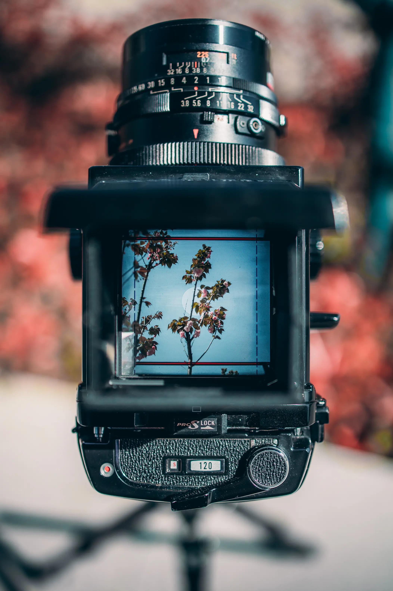
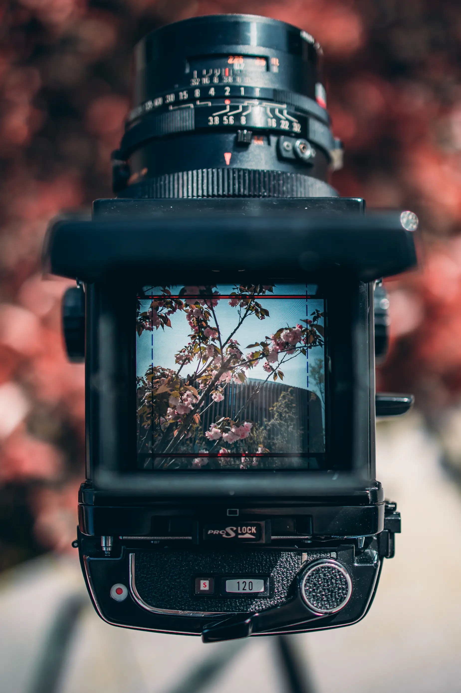
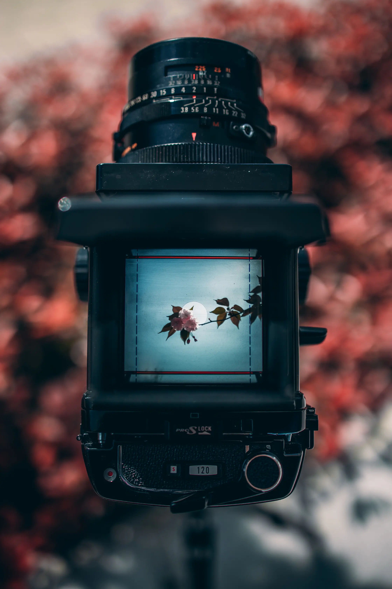
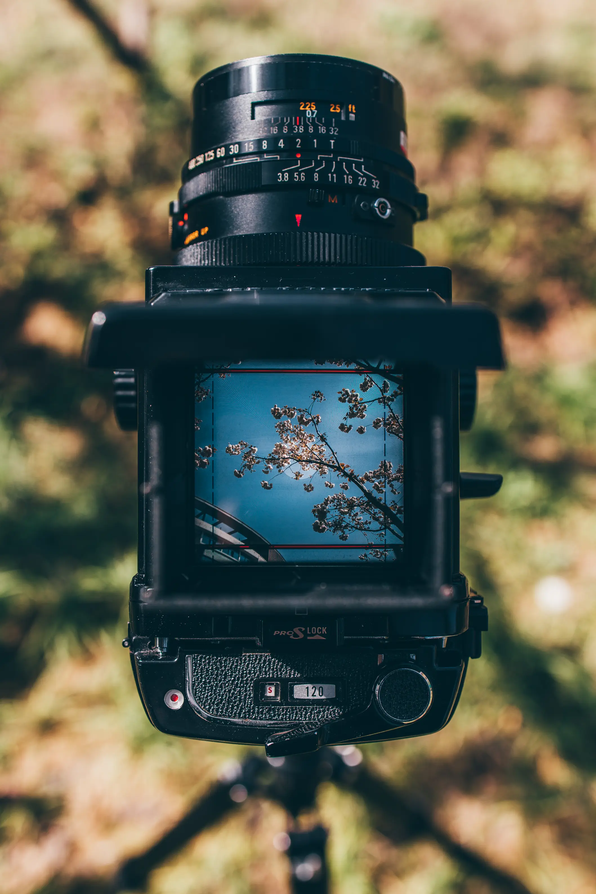

Spring in Focusing Screen
Canon EOS R, RF 35mm F1.8 Macro IS STM
One of the reasons I love the Mamiya RB67 is its focusing screen. Capturing spring through its focusing screen was the first series of photos I took after acquiring it. Yes, I took photos with it, but it’s more like I captured photos through it.
